ANAKIN SKYWALKER / DARK VADOR
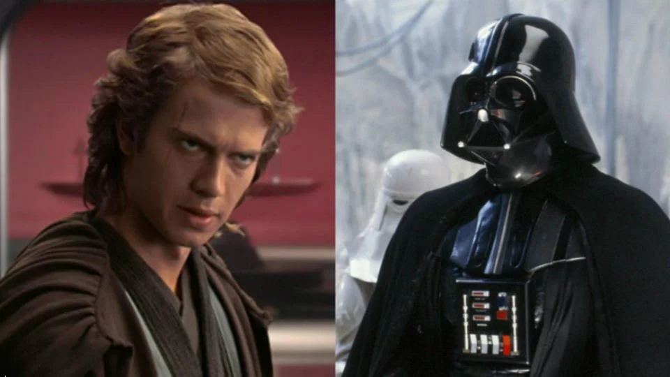
A 9 ans, il est repéré grâce à son potentiel énorme. Le jeune homme devient rapidement l'un des plus puissants jedi, mais après la mort de sa mère, il se laisse progressivement dominer par ses émotions et fini par basculer du côté obscur de la Force. C'est ainsi qu'Anakin devient Dark Vador, au service de l'Empire. Auparavant, il était tombé amoureux de Padmé Amidala, avec laquelle il a eu deux jumeaux, Luke et Leia. Au cours du duel final, Anakin sauvera son fils -après lui avoir avoué qu'il était son père- en se sacrifiant pour éliminer l'Empereur maléfique.
PADME AMIDALA
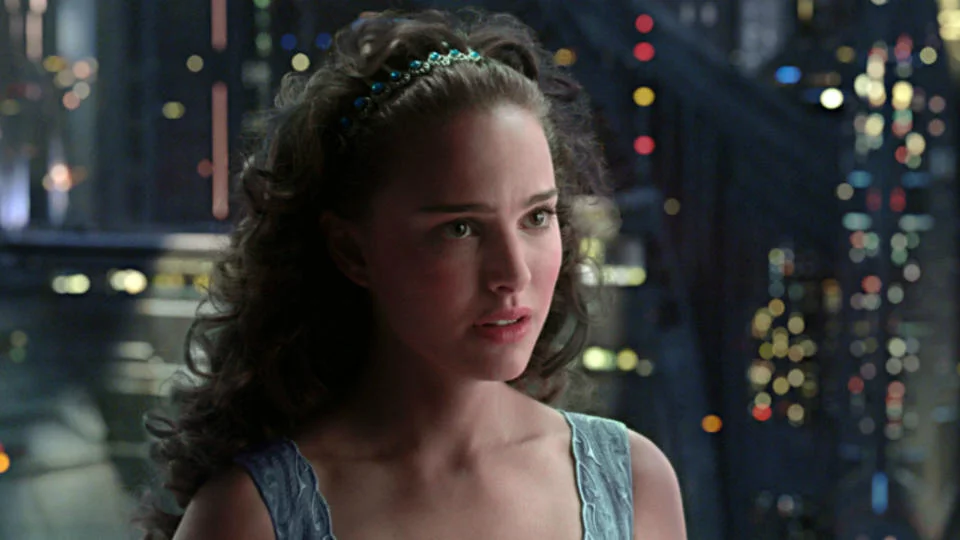
La jeune reine de la planète Naboo entretien une romance puis se marie avec le chevalier jedi envoyé pour la protéger des attaques de la Confédération, Anakin Skywalker. Intelligente et courageuse, elle devient ensuite sénatrice. Mais Padmé finit par perdre la vie en donnant naissance à leurs jumeaux, Luke et Leia.
R2-D2
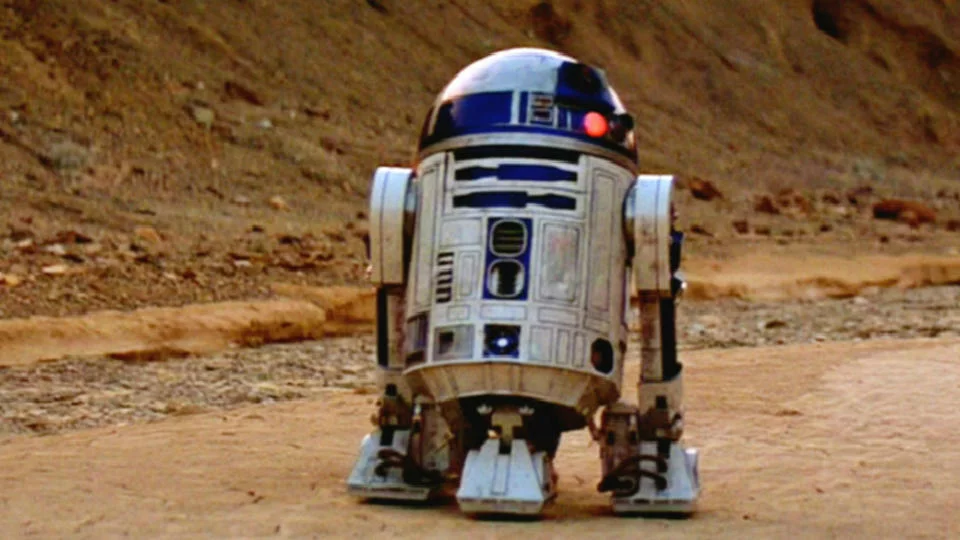
Ce petit robot est le compagnon d'Anakin puis de Luke Skywalker. Doté d'un caractère bien trempé, il exprime son mécontentement fréquent par de petits sifflements électroniques. Néanmoins, grâce à ses nombreux gadgets et son courage, R2-D2 tire souvent les héros de situations périlleuses.
C-3PO
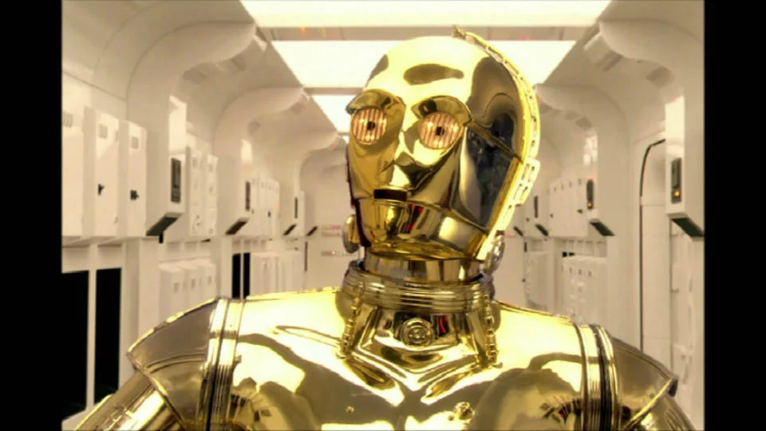
C'est le compère de R2-D2, tels des Laurel et Hardy futuristes. Ce "droïde de protocole" très bavard maîtrise pas moins de six millions de langages pratiqués dans la galaxie. Construit par Anakin Skywalker, C-3PO est d'abord équipé d'une enveloppe en métal gris, avant de recevoir une protection dorée par la suite.
QI-GON JINN
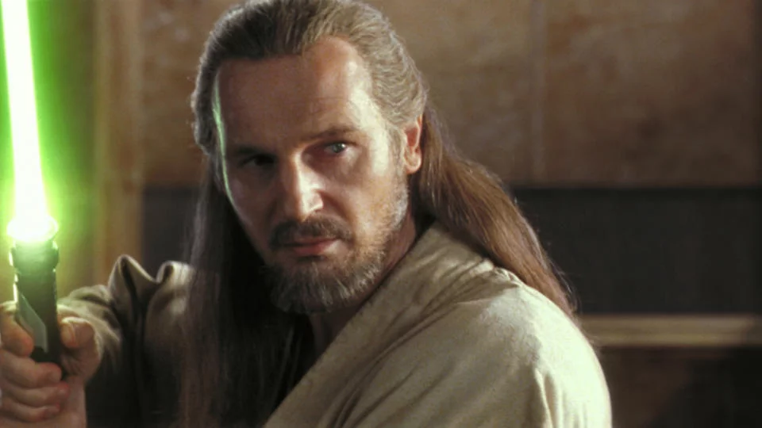
ce maître jedi est le tuteur d'Obi-Wan Kenobi. Il est surtout celui qui a découvert le potentiel d'Anakin Skywalker, et qui a insisté pour le former malgré son âgé avancé (9 ans) pour commencer l'entraînement jedi. Qi-Gon est ensuite tué en duel par le sinistre Dark Maul.
OBI-WAN KENOBI
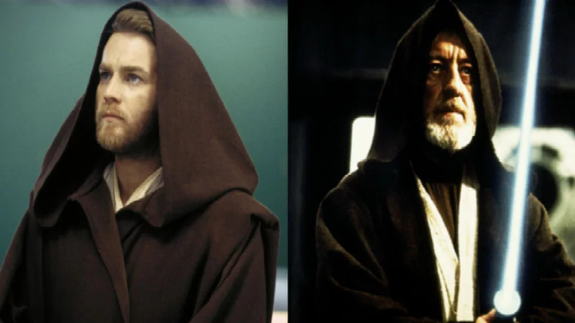
Brillant chevalier jedi, il est le mentor d'Anakin Skywalker, mais il ne peut rien faire pour éviter son passage du côté obscur. Obi-Wan initie ensuite Luke Skywalker à la Force, avant de se faire tuer par son premier élève, devenu Dark Vador.
YODA
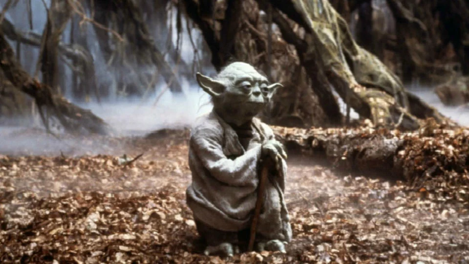
Curieuse petite créature parlant à l'envers, il est surtout l'un des plus puissants maîtres jedi. Opposé à l'entrée d'Anakin dans l'ordre Jedi, Yoda s'exile sur la planète sauvage Dagobah lorsque la République est renversée. C'est là que Luke Skywalker vient ensuite le chercher pour compléter son entraînement.
DARK MAUL
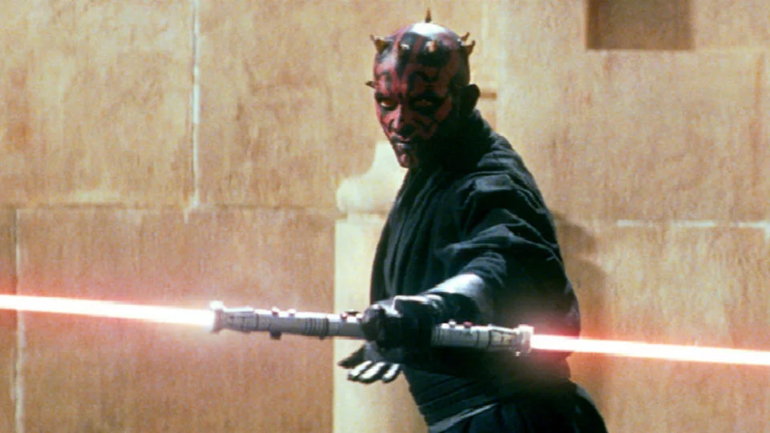
Doté d'un double sabre laser, c'est un redoutable combattant aux ordres du sénateur Palpatine, qui poursuit les héros durant le premier épisode de la saga. Au cours d'un combat épique, Dark Maul tue Qi-Gon Jinn mais fini par être éliminé par le padawan (l'apprenti) de celui-ci, Obi-Wan Kenobi.
haut de la page
JANGO ET BOBA FETT
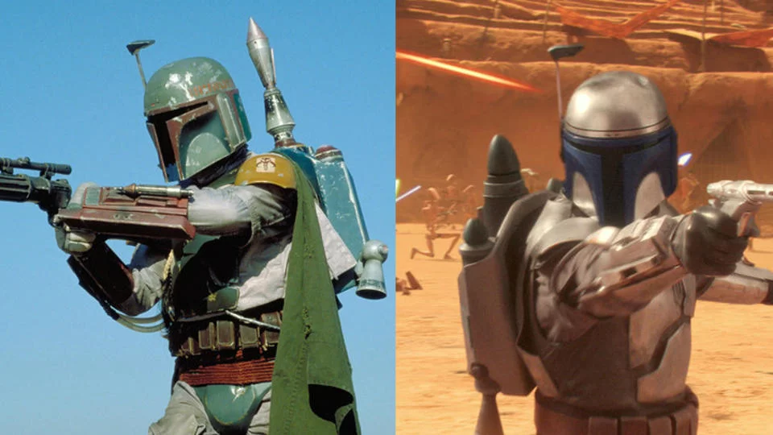
Ce sont deux puissants et ingénieux chasseurs de primes, Bobba étant le père adoptif de Jango. Ils mettent successivement des bâtons dans les roues des héros durant toute la saga. Par ailleurs, Jango Fett est également le modèle original des clones utilisés par l'Empire.
COMTE DOOKU
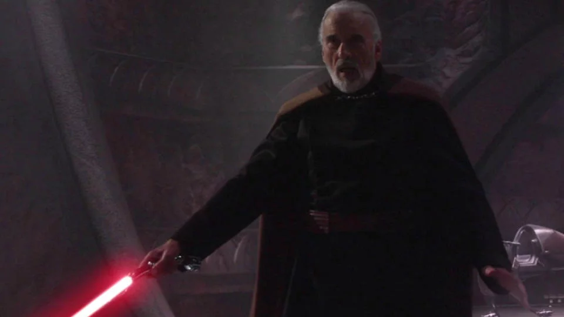
il est le commandant maléfique de la Confédération dans la première trilogie. Après avoir coupé le bras d'Anakin, il combat dans un violent duel son ancien maître, Yoda, avant de prendre la fuite. Le Comte Dooku est finalement sacrifié par son l'Empereur Palpatine, lorsque celui-ci ordonne à Anakin de le tuer afin qu'il succombe à son sombre désir de vengeance.
haut de la page
PALPATINE/EMPEREUR
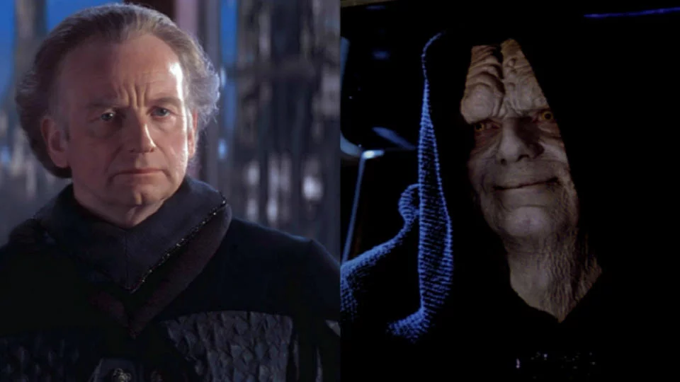
D'abord sympathique sénateur au début de la première trilogie, prenant Anakin sous son aile, Palpatine révèle progressivement son appartenance au côté obscur de la Force. Grâce à ses manigances, il parvient à faire éliminer presque tous les jedis, et s'empare ainsi du pouvoir pour devenir Empereur. En parallèle, il fait basculer Anakin Skywalker. Après avoir été transformé en Dark Vador, celui-ci devient le bras-droit de l'Empereur. Mais il le trahit finalement et le jette dans le réacteur de l'Etoile Noire.
haut de la page
LUKE SKYWALKER
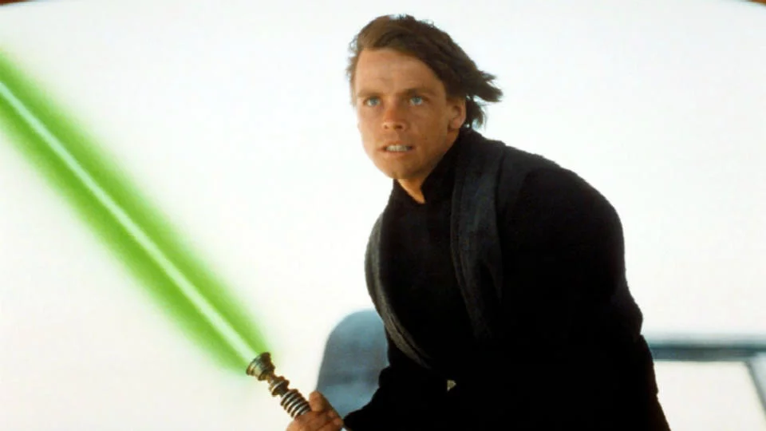
il est le héros de la première trilogie. Fils d'Anakin Skywalker (Dark Vador) et de la princesse Padmé Amidala, il est celui qui ramene l’équilibre dans la Force. Luke est entraîné par Obi-Wan Kenobi puis Yoda, et est accompagné dans ses aventures par sa sœur Leia, Han Solo, Chewbacca, R2-D2 et C-3PO.
haut de la page
LEIA ORGANA
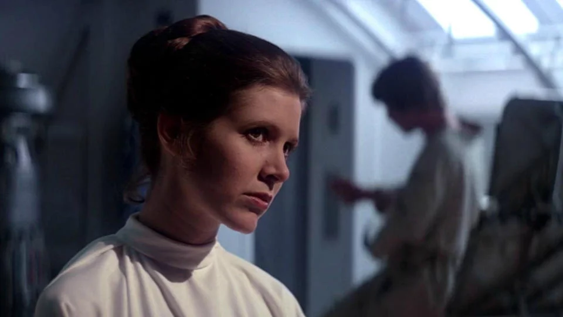
C'est la sœur jumelle cachée de Luke Skywalker. Au début sénatrice de l'Empire, elle se joindra ensuite à la Rébellion, n'hésitant pas à prendre part aux combats. Elle finira par succomber aux charmes de l'aventurier Han Solo. L’héroïne de Star Wars 7, Rey, pourrait d'ailleurs être leur fille.
haut de la page
HAN SOLO
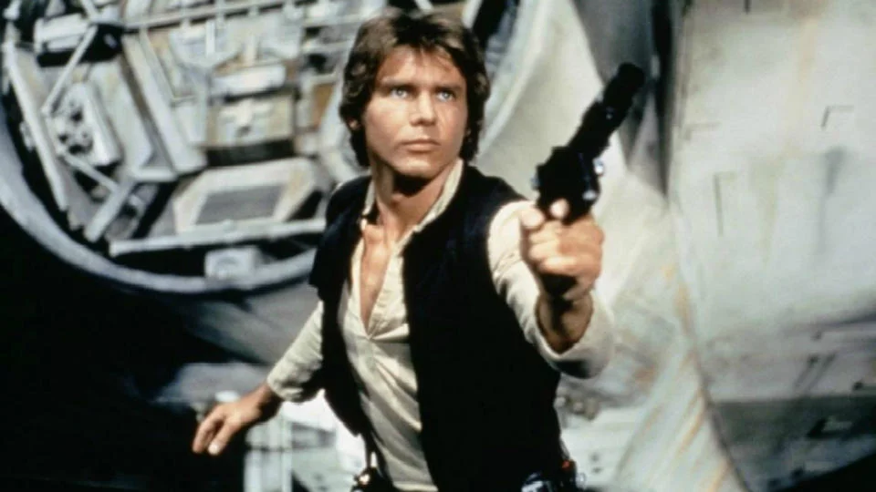
A l'origine, il est un contrebandier qui écume la galaxie en compagnie de son acolyte Chewbacca, à bord de leur vaisseau, le Faucon Millenium. Il est recruté par Luke Skywalker et Obi Wan Kenobi pour les transporter sur la planète Tatooine, avant de prendre fait et cause pour la Rébellion. Han Solo tombe d'ailleurs amoureux de la sœur du premier, Leia.
haut de la page
REY
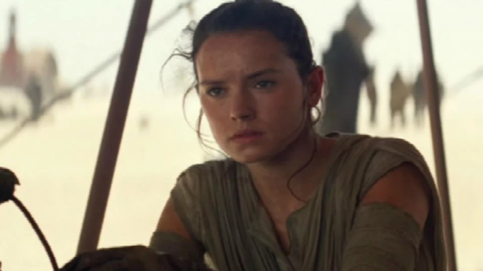
Elle pourrait être la fille de Leia et Han Solo. A l'instar de ceux-ci, Rey ne semble pas craindre les aventures rocambolesques.
haut de la page
FINN
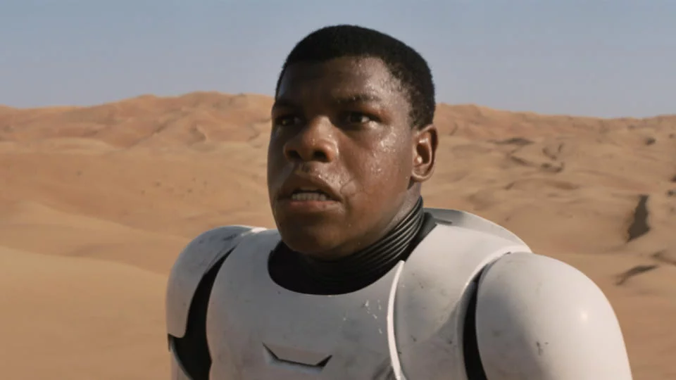
Ancien Stormtrooper (soldat de l'armée régulière), le jeune homme accompagne Rey . Il semble aussi avoir des pouvoirs de jedi, car dans le dernier trailer du film, il manie un sabre laser. De couleur bleu, certains murmurent qu'il pourrait appartenir à Luke Skywalker et que celui-ci lui aurait transmis.
KYLO REN
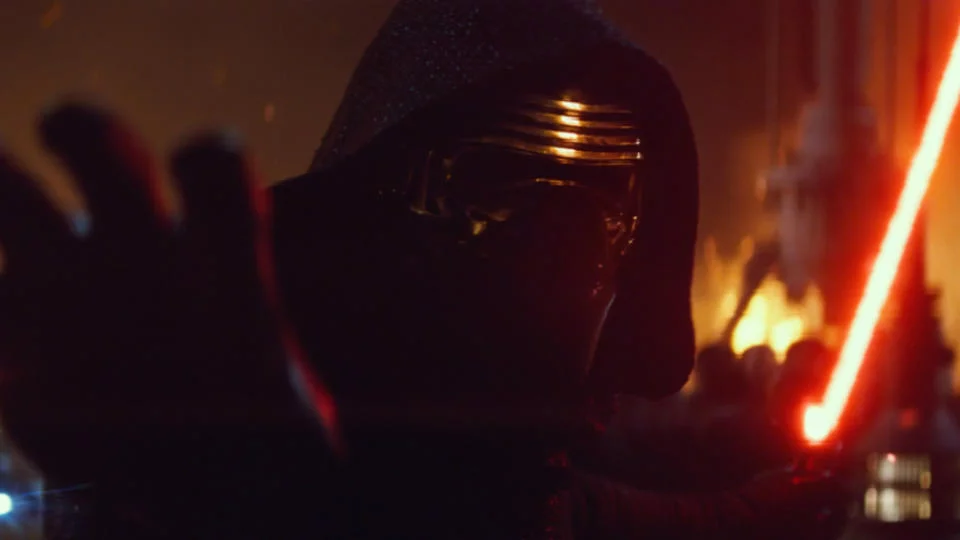
Il est le grand méchant de la saga. Doté d'un costume ainsi que d'un masque noir, il manie un impressionnant sabre laser en croix rouge. Kylo Ren appartient au côté obscur de la Force... et reprend ainsi le flambeau de Dark Vador.
haut de la page